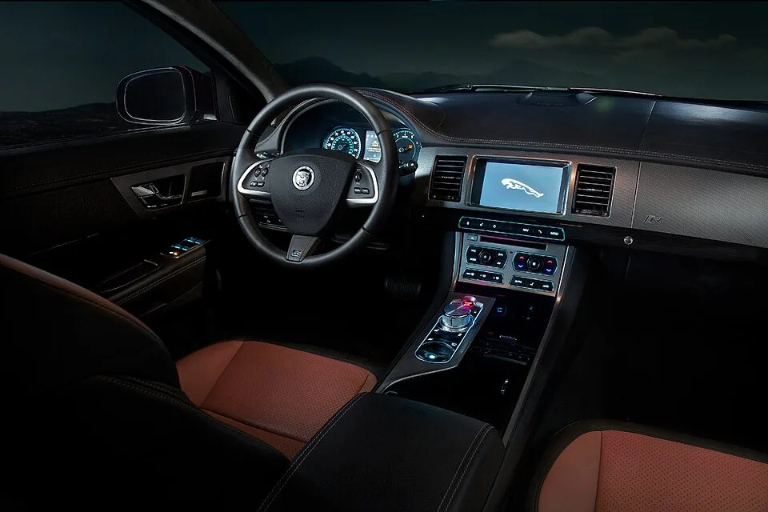

▲ 2009~2010년식 재규어 XF(X250). 디오토피안이 시승한 차량과 같은 1세대 XF 세단이다
1. 전기차 사러 온 손님이 두고 간 16년 된 재규어
미국 자동차 매체 디오토피안(The Autopian)의 데이비드 트레이시(David Tracy) 기자가 우연히 만난 중고차 한 대가 화제다. 그가 근무하는 파트너사 갤핀(Galpin)에 폴스타 2를 구매하려는 고객이 자신의 기존 차량을 트레이드인(보상판매)으로 넘기면서 벌어진 일이다. 비디오 매니저 그리핀이 "오래된 재규어 한 대가 폴스타 2와 트레이드인됐다"고 알려왔을 때만 해도, 트레이시 기자는 큰 기대를 하지 않았다.
디오토피안에 따르면 문제의 차량은 2010년식 재규어 XF, 4.2리터 V8 엔진을 얹은 가장 낮은 등급의 V8 트림이었다. 주행거리는 10만 마일(약 16만km)을 밑돌았고, 갤핀이 매물로 내놓은 가격은 단돈 1만 860달러(약 1,500만원)였다. "영국차답게 전자장비는 죄다 맛이 갔을 것"이라 확신했다는 그는, 16년이라는 세월과 낮은 가격표를 보며 낡고 삐걱대는 차를 예상했다고 밝혔다.
▲ 재규어 XF 1세대(X250)의 전측면. 2008년 출시 당시 재규어의 이미지를 완전히 바꿔놓은 디자인으로 평가받는다 ⓒ Wikimedia Commons
2. "우드 트림이 완벽하다"… 16년이 무색한 실내 상태
실제로 차를 마주한 트레이시 기자의 첫 반응은 "압도당했다(blown away)"는 것이었다. 디오토피안 기사에 따르면 그는 이 차의 실내를 두고 "모든 표면이 최고급 품질이었다. 도어 카드, 센터 콘솔, 센터 스택, 스티어링 휠, 계기판, 대시보드까지 — 16년이 지난 지금도 고급스러움이 느껴졌다"고 평가했다. 특히 우드 트림에 대해서는 "나무 무늬를 한번 보라. 이 세월이 지나고도 완벽하다"고 감탄했다.
가장 인상적인 부분은 시동을 걸 때 나타나는 연출이었다. 센터 터널에서 솟아오르는 6단 자동변속기의 로터리 다이얼 변속기는 "아름답고 묵직한 알루미늄 보석 같다"고 표현됐으며, 에어컨 송풍구 역시 시동과 동시에 Y축을 따라 천천히 우아하게 회전해 운전자를 향하는 기믹을 갖추고 있었다. 흠이라면 트림 조각 하나와 대시보드 중앙 스피커가 오랜 햇빛 노출로 살짝 뒤틀린 정도였다는 것이 디오토피안의 설명이다.

▲ 재규어 XF의 실내. 시동과 함께 솟아오르는 로터리 다이얼 변속기(사진은 고성능 트림 XFR 기준)가 X250 세대의 상징이었다 ⓒ Wikimedia Commons
📍 참고로 알아두면 좋은 것
디오토피안에 따르면 이 차는 갤핀에서 실제 매물로 등록된 개체이며, 트레이시 기자가 직접 인수해 짧은 시승을 진행했다. 카프리즘이 직접 시승한 차량은 아니며, 본 기사는 디오토피안의 시승 리포트를 토대로 재구성했다.
3. "감각 차단실 같았다"… 300마력 V8이 만든 정숙한 주행감
주행에 나서자 트레이시 기자는 또 한 번 놀랐다. 디오토피안은 그의 인상을 "감각 차단실(sensory deprivation chamber)처럼, 세상을 미끄러지듯 부드럽게 가로지르는 느낌이었다"고 전했다. 이 차에 얹힌 4.2리터 V8 엔진은 300마력을 내며, ZF의 6단 자동변속기와 맞물려 0-60mph(약 0-97km/h) 가속을 6초대 초반에 끊는다. 패들 시프터를 활용하면 즉각적인 응답성과 함께 재미있는 주행도 가능했다는 것이 디오토피안의 평가다.
트레이시 기자는 이런 완성도의 배경으로 XF가 물려받은 플랫폼을 지목했다. 그는 "포드(Ford)가 만든 뼈대는 사실 훌륭했다. 다만 그게 맞는 차체에 담기지 않았을 뿐"이라고 짚었다. 실제로 XF의 기반이 된 DEW98 플랫폼은 링컨 LS의 서스펜션을 개발한 후이베르트 미스(Huibert Mees)의 작업이 녹아든 구조로, 이전 세대인 S-타입에서는 그 잠재력을 다 살리지 못했다는 것이 그의 설명이다. XF에 와서야 비로소 섀시 본연의 실력이 드러났다는 뜻이다.
4. 재규어 XF 중고차 시장의 감가율… 왜 이렇게 저렴해졌나
1,500만원 안팎에 3.0리터 이상급 럭셔리 V8 세단을 살 수 있다는 사실은, 역설적으로 재규어 XF의 중고차 시장 내 위치를 보여준다. 재규어는 전통적으로 벤츠·BMW·아우디 등 '독일 3사'에 비해 브랜드 잔존가치와 딜러망, 부품 수급에서 열세로 평가받아 왔고, 이는 고스란히 감가폭으로 이어졌다. 신차 당시 5,000만~7,000만원대에 판매되던 XF가 16년 만에 10분의 1 수준까지 떨어진 셈이다.
다만 감가가 모든 트림에 동일하게 적용되는 것은 아니다. 디오토피안에 따르면 XF는 이후 5.0리터 V8 엔진을 얹은 상위 트림도 선보였으며, 최고 성능 버전인 'XF-R'은 최대 510마력을 냈다. 트레이시 기자는 이 엔진을 얹은 개체가 시장에서 약 2만 5,000달러(약 3,500만원) 선에 거래되는 것을 두고 "그 가격이면 놀라운 애호가용 머신"이라고 평가했다. 즉 같은 플랫폼이라도 엔진과 트림, 상태에 따라 가격 스펙트럼이 상당히 넓게 형성돼 있다는 뜻이다.
| 트림/엔진 | 출력 | 중고 시세(디오토피안 기준) |
|---|---|---|
| 2010년식 4.2L V8(테스트 차량) | 300마력 | 1만 860달러(약 1,500만원) |
| 5.0L V8 XF-R | 최대 510마력 | 약 2만 5,000달러(약 3,500만원)대 |
▲ 딜러 전시장에 놓인 재규어 XF S. 낮은 잔존가치 탓에 중고 매물 가격대가 넓게 형성돼 있다 ⓒ Wikimedia Commons
5. 이 가격에 XF를 사도 될까… 합리성과 리스크
디오토피안의 시승기가 전하는 결론은 명확하다. "낮은 감가율 때문에 저평가된 차일수록, 오히려 실사용 관점에서는 높은 만족도를 줄 수 있다"는 것이다. 트레이시 기자는 애초 "전형적인 영국차답게 전자장비는 다 고장 났을 것"이라 예상했지만, 실제로는 내장재 품질과 NVH(소음·진동·잡소리), 섀시 세팅까지 여전히 인상적인 수준을 유지하고 있어 우려가 기우에 그쳤다고 밝혔다.
다만 이는 어디까지나 개체 상태가 양호한 한 대의 사례라는 점은 유의할 필요가 있다. 디오토피안 기사 자체는 신뢰성 통계나 유지비에 대한 구체적 분석을 제시하지는 않았다. 재규어 특유의 전장 계통 고장, 에어 서스펜션이 적용된 상위 트림의 정비 비용, 부품 수급 기간 등은 실제 구매를 고려할 때 별도로 점검해야 할 부분이다. 관심 있는 독자라면 디오토피안 원문에서 시승 전 과정을 확인할 수 있다. 바로가기
✅ 재규어 XF 중고 구매 전 이것만은 확인하세요
· 테스트 차량은 2010년식 4.2L V8, 주행거리 10만 마일 미만, 가격 1만 860달러(약 1,500만원)
· 우드 트림·로터리 다이얼 변속기 등 실내 완성도는 16년이 지나도 준수하다는 평가
· 0-60mph 6초대 초반, "감각 차단실" 같은 정숙한 주행질감이 강점
· 낮은 브랜드 잔존가치로 감가폭이 커, 동급 독일차 대비 합리적인 가격대 형성
· 전장 계통 고장, 에어 서스펜션 정비 비용 등은 개체별로 별도 점검 필요
6. 정리
디오토피안이 시승한 2010년식 재규어 XF는 폴스타 2 구매 고객이 넘긴 트레이드인 차량으로, 갤핀에서 1만 860달러(약 1,500만원)에 판매됐다. 16년의 세월에도 우드 트림과 로터리 다이얼 변속기로 대표되는 실내 완성도, 300마력 V8이 만드는 정숙하고 부드러운 주행감이 인상적이었다는 것이 시승 기자의 평가다. 낮은 브랜드 잔존가치 탓에 형성된 넓은 감가폭은 역설적으로 지금 XF를 합리적인 가격에 만날 수 있는 이유가 되고 있지만, 전장·에어 서스펜션 등 개체별 정비 리스크는 구매 전 별도로 확인할 필요가 있다.